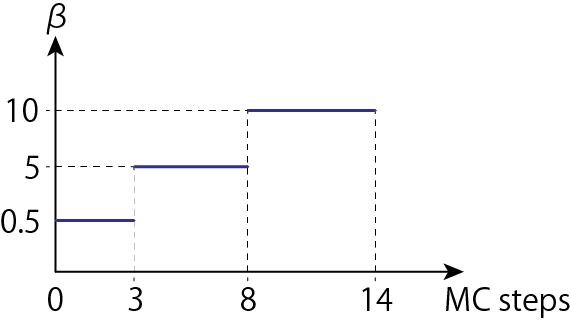
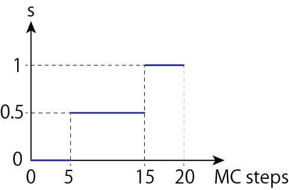
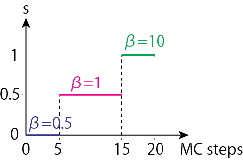

Parameters customize¶
Customize annealing schedule¶
In this page, let us show you how to set the parameters for annealing.
SASampler¶
SASampler has arguments as follows.
beta_min (float)¶
The minimum value of inverse temperature. Default to None. This corresponds to the starting temperature for annealing.
If you do not specify anything, OpenJij will set the appropriate temperature automatically.
beta_max (float)¶
The maximum value of inverse temperature. Default to None. This corresponds to the ending temperature for annealing.
If you do not specify anything, OpenJij will set the appropriate temperature automatically.
num_reads (int)¶
The number of iteration of annealing. Default to 1. If num_reads is specified, response has numerical results for the number of num_reads.
num_sweeps (int)¶
The number of Monte-Carlo steps (hereafter we called MCsteps) during annealing. Default to 1000.
-note- MCsteps means the number of times to flip all the spins in the system. e.g., the case of N spin system, during 1 MCstep, you will have to flip these spins N times.
schedule (list)¶
You can set the annealing schedule as you like. Default to None. If you want to calculate “alpha” MCsteps for a given inverse temperature “beta”, you can set it as [beta, alpha].
Sample script 1¶
The following is an example of annealing with parameters beta_min=0.1, beta_max=100, num_reads=1000, num_sweeps=100.
import openjij as oj
n = 10
h, J = {}, {}
for i in range(n-1):
for j in range(i+1, n):
J[i, j] = -1
# set parameters
bmin = 0.1
bmax = 100
nreads = 1000
nsweeps = 100
sampler = SASampler()
response = sampler.sample_ising(h, J, beta_min=bmin, beta_max=bmax, num_reads=nreads, num_sweeps=nsweeps)
Sample script 2¶
Here, let me show you an example how to specify an annealing schedule for user. The following figure shows an image of annealing schedule.

At first, calculate 3 MCsteps with beta=0.5. Next, compute 5 MCsteps with beta=5. Finally, execute 6 MCsteps with beta=10.
A example of script that does this is following.
schedule = [[0.5, 3], [5, 5], [10, 6]]
sampler = SASampler()
response = sampler.sample_ising(h, J, schedule=schedule)
SQASampler¶
SQASampler considers the total Hamiltonian with the following quantum terms when the Hamiltonian of the problem you want to solve is $\hat{H}_p$,
$ \hat{H} = s\hat{H}p + (1-s) \Gamma \sum{i} \hat{\sigma}^x_i $
and annealing is performed under the following statistical distribution,
$ P(\hat{H}) \propto e^{-\beta \hat{H}} $
SQASampler has arguments as follows.
beta (float)¶
The inverse temperature. Default to 5.0.
Gamma (float)¶
The magnitude of the quantum term. Default to 1.0.
trotter (int)¶
The system Trotter decomposition number. Default to 4.
num_sweeps (int)¶
The number of MCsteps required between changing the annealing schedule parameter s from 0 to 1. Default to 1000.
num_reads (int)¶
The number of annealing iteration. Default to 1.
shcedule (list)¶
Set an annealing shcedule as you like. Default to None. For a given inverse temperature if you want to compute “alpha” MCsteps with the annealing schedule parameter “s”, you can set it as [s, alpha].
If you want to specify the inverse temperature “beta” and compute “alpha” MCsteps with the annealing schedule parameter “s”, you can specify it as [s, beta, alpha].
Sample script 1¶
The following example shows an annealing computation with beta=10, gamma=5, trotter=16, num_reads=1000, num_sweeps=100
import openjij as oj
n = 10
h, J = {}, {}
for i in range(n-1):
for j in range(i+1, n):
J[i, j] = -1
# set parameters
beta = 10
gamma = 5
trotter = 16
nreads = 1000
nsweeps = 100
sampler = SQASampler()
response = sampler.sample_ising(h, J, beta=beta, gamma=gamma, trotter=trotter, num_reads=nreads, num_sweeps=nsweeps)
Sample script 2¶
Here we introduce an example of a user-specified annealing schedule. The following figure shows an image of annealing schedule.

First, 5 MCsteps with s=0.0. Next, 10 MCsteps with s=0.5. Finally, 5 MCsteps with s=1.
schedule = [[0, 5], [0.5, 10], [1, 5]]
sampler = SQASampler()
response = sampler.sample_ising(h, J, schedule=schedule)
Sample script 3¶
In this section, we show you an example of a user-defined annealing shcedule in more detail.

First, 5 MCsteps with s=0.0, beta=0.5. Next, 10 MCsteps with s=0.5, beta=1.0. Finally, 5 MCsteps with s=1, beta=10.
schedule = [[0, 0.5, 5], [0.5, 1.0, 10], [1, 10, 5]]
sampler = SQASampler()
response = sampler.sample_ising(h, J, schedule=schedule)